已定（2026-10-16）：按推荐落地，Web、iOS / macOS、Android 三份词表一起改。结论：Delivering… 不合适。这时消息已经到了 Claude 那里，只是在等它做完手上这一步再读；「-ing…」说的却是「还在路上」，一停几分钟就像卡住了，旁边再放 Withdraw 也会读成「取消投递」。大家熟悉的是聊天软件的回执：发送中 → 已送达（未读）→ 已读，这一行照这个顺序改，三处要动，其余不变。每一格都是真实页面截的（右下角是你那条消息的气泡），「建议」是把新文案写进同一个页面。
| 消息走到哪 | 现在 | 建议 | 为什么 |
|---|---|---|---|
| 还在路上Orbit 收下了，还没交给引擎；通常不到一秒 | 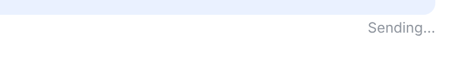 |
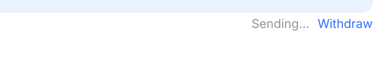 |
不变只是后面加了 Withdraw。 |
| 到了，模型还没读Claude 在跑工具，等这一步结束才读；可能几分钟 | 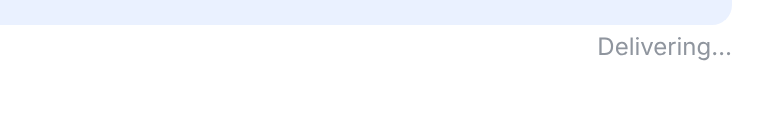 |
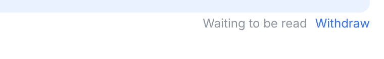 |
改主要问题。消息已经到了，缺的是「被读到」。Waiting to be read 说清楚两件事：没丢，在排队等着被读。不写「什么时候读」：这一轮可能先结束，那时它改成下一轮单独跑，写了时间就成了空话。 |
| 正在撤回新增的状态 | — | 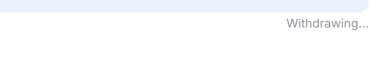 |
新增链接消失，不能重复点。 |
| 模型读到了已经进了这一轮，这一轮的回复会照顾到它 | 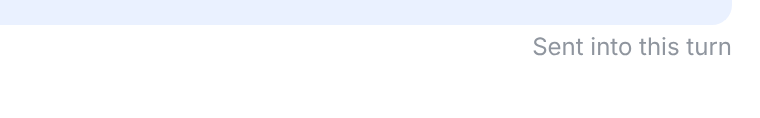 |
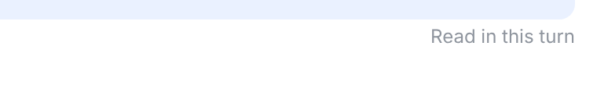 |
改在聊天软件里 Sent（已发出）比 Delivered（已送达）还早，原来 Sending → Delivering → Sent 是倒着走的。你真正关心的是「它看到没有」，所以用 Read；in this turn 保留：这条没有自己的回复，回复在这一轮里。 |
| 没赶上这一轮这一轮先结束了，改成下一轮单独跑 | 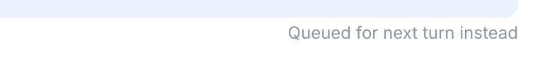 |
不变 | 不变说得准确：没丢，换到下一轮。 |
| 没送到引擎没拿到，或者没读就结束了 | 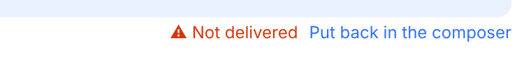 |
不变 | 不变Not delivered 是最常见的失败说法；具体原因在提示里（The turn finished before it was read. 这类句子本来就用 read，和新文案一致）。 |
| 不知道读没读引擎还没回显就退出了 | 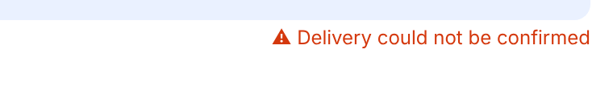 |
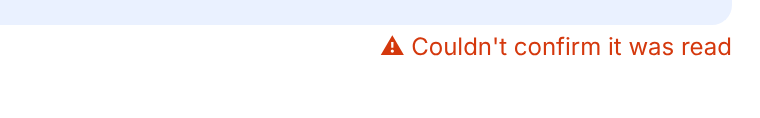 |
改不确定的不是「送没送到」（已经送到了），而是「读没读」。语气保持中性，不催你重发：它可能已经照做了，重发会做两遍。 |
| 撤回时来不及窗口右上角的提示 | — | 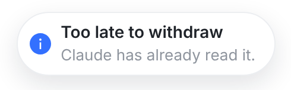 |
新增和 Read in this turn 用同一个词。原稿 Claude had already read this message. 改成现在时，也更短。 |
lib/steerDelivery.ts、iOS/macOS SteerDelivery.swift、Android BackgroundWakeCard.kt，有对拍测试钉着两端一致；加上 Web 排队区里的 Delivery could not be confirmed（WorkspaceView.tsx），以及各自的测试。服务器和 runner 内部的状态名（written、acknowledged）不用改。